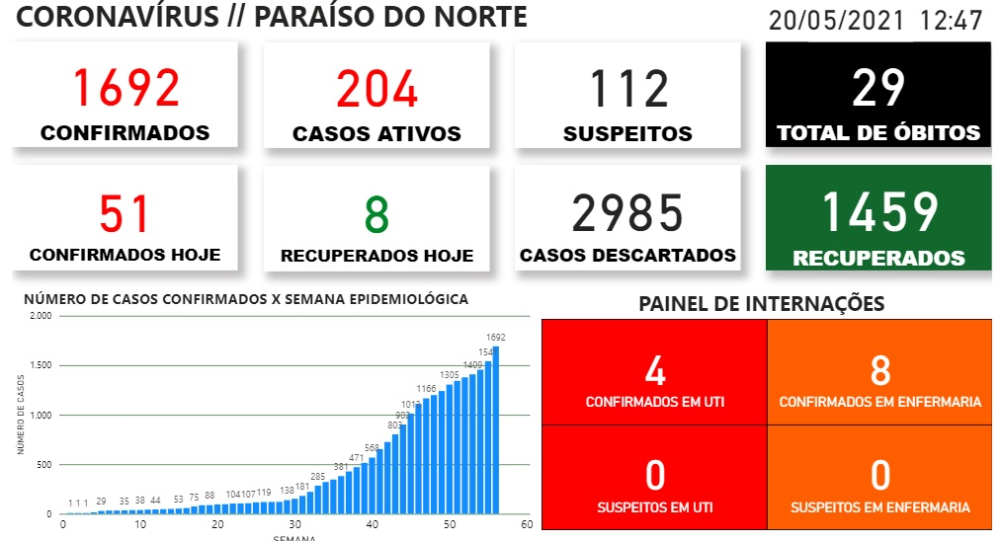
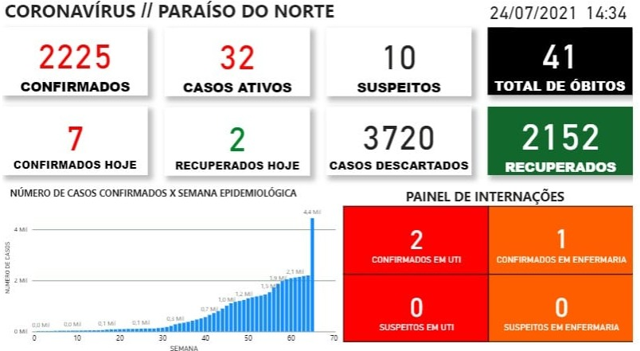

Paraíso do Norte tem nos deixado impressionados com a baixa de casos nas últimas semanas, tudo isso devido ao isolamento social e a vacinação.
Esta imagem é referente ao dia 20 de Maio em que mostra que os casos estavam extremamente altos.
Esta imagem é referente ao dia 24 de Julho em que mostra que os casos diminuiram drasticamente.
A vacinação na cidade de Paraíso do Norte já está muito avançada, foram vacinadas mais de cinco mil pessoas com a primeira dose. Na confiaça de que em breve voltaremos ao normal, as Escolas Municipais iniciaram o ensino hibrido, em breve O Colégio Estadual e a Faculdade UniBF retornarão no mesmo sistema.
PARAÍSO DO NORTE
Primeira dose
56,90% (6.698 doses)
PARAÍSO DO NORTE
Segunda dose
19,67% (2.316 doses)
PARAÍSO DO NORTE
Dose única
2,85% (336 doses)
As aulas estão muito proximas do seu retorno, se você pretende retornar as aulas segue algumas dicas para previnir o covid-19.
Quando for a escola use máscara e leve
algumas para trocar de 2 em 2 horas
Passe alcool gel frequentemente
Matenha a distância
Cubra a boca e o nariz quando for tossir ou
esprirrar com o braço dobrado